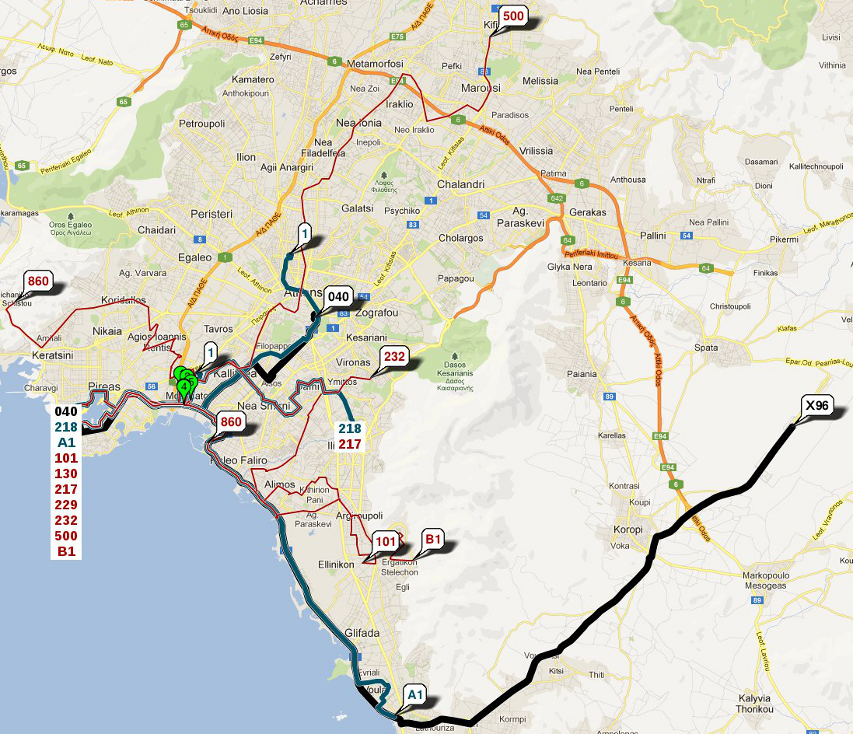
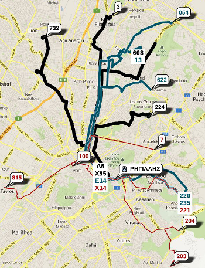

This is the second version of zee.gr, brings significant improvements over the first version including updated routing data, incorporation of the original taxi app, estimated live departures, timetables and spider diagrams (all transit options to/from a specific location).
By far the most useful feature of zee.gr, missing from traditional trip planners, is the Route Explorer function. Trip planners do a great job of getting you from A to B, however there are situations where data should be presented in a different way. In particular, the main "problem" of public transport in any city is that riders may feel they are not in control, and the transit system, especially in the eyes of a visitor, may seem to be a mystery. In other words, the rider should be offered a similar level of control as if they were driving a car, free from the uncertainty of scheduled services and the ability to orientate themselves by means of exploration.
The Route Explorer tries to address this need by offering the rider the ability to explore the public transport system even without prior-knowledge of the city or known destination. All routes can be visualised (plotted on the road and not just a straight line between stops) and explored, enabling the rider to become orientated and knowledgeable of their options as opposed to ridged, time dependent itineraries.
Sometimes you may not be interested in planning a trip from A to B, you may wish to simply see your options. Inspired by the bus spider diagrams at London underground stations, this tool helps you visualise all of your options from any given point on the map. Ultimately, this means you can never get lost.
The idea is that you can quickly see all of your options with 1 click. The tool scans all options within a 500m radius of the specified point. Routes are colour coded and weighted according to frequency. Higher frequency routes are colour coded in Black, average frequency routes in Blue and low frequency routes in red. In fact, all routes on zee.gr are ordered by frequency with 1/7 of routes colour coded black, 2/7 of routes blue, and 4/7 routes in red. 14% + 28% + 58% = 100%. This has the effect that the more important routes stand out, and helps to cluster the information in a meaningful way. In the example above, it is immediately clear that if you were interested in getting to the centre of Athens, you should take the 040 bus or number 1 trolley. The lower frequency routes tend to be local services, as shown above, and can be ignored if you are interested in traveling to another district.
The spider diagram tool also works in reverse, showing all transit options to a specific location. This can be very useful, if for example, you are looking for a convenient meet-up point with friends or wish to show customers directions to your place of business. The spider diagram is also interactive: A list of routes are displayed along with the diagram on the right hand side of the map. Routes are grouped by nearby bus stops or stations, and moving the mouse over any route will cause it to be highlighted on the map - this is very useful for more complicated diagrams.
Clicking on a stop from the map or route details will show all outgoing services from that stop on the map along with a queue of next departures.
 The example on the left shows the services from bus stop Regilles in the Kolonaki district of Athens. The diagram shown on the map is similar to the transit option spider diagram, except that it shows services from a stop rather than from a location on the map. The purpose of the diagram is to help you quickly understand spatially where you can go from a particular stop; I believe this is much more useful than a simple list of services. In this example, it is immediately obvious that the 815 goes to Tavros, although it is colour coded red (as opposed to more frequent Black), so you are likely to be waiting quite some time.